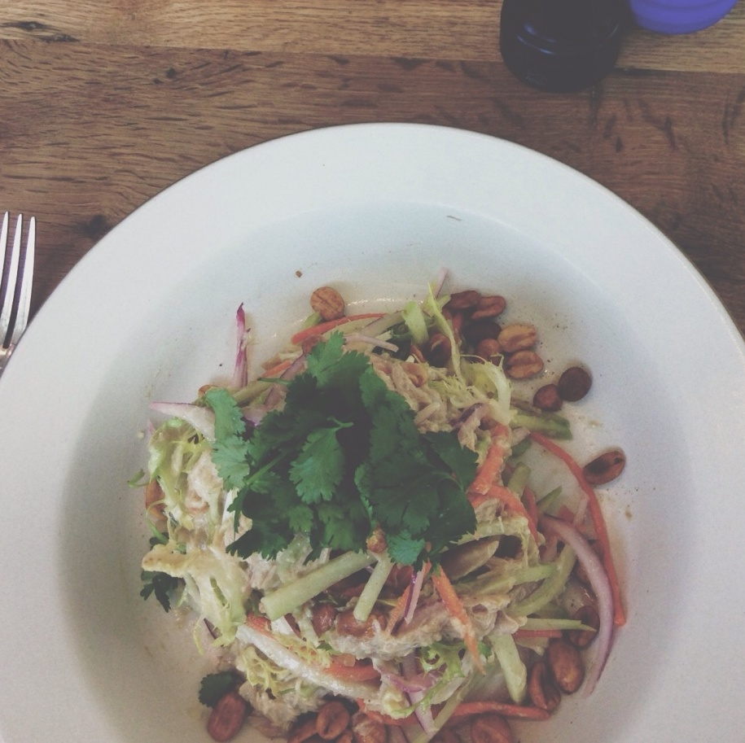
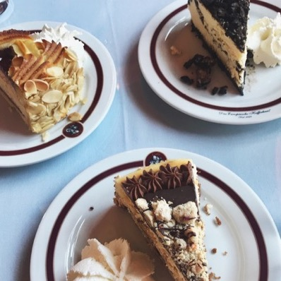
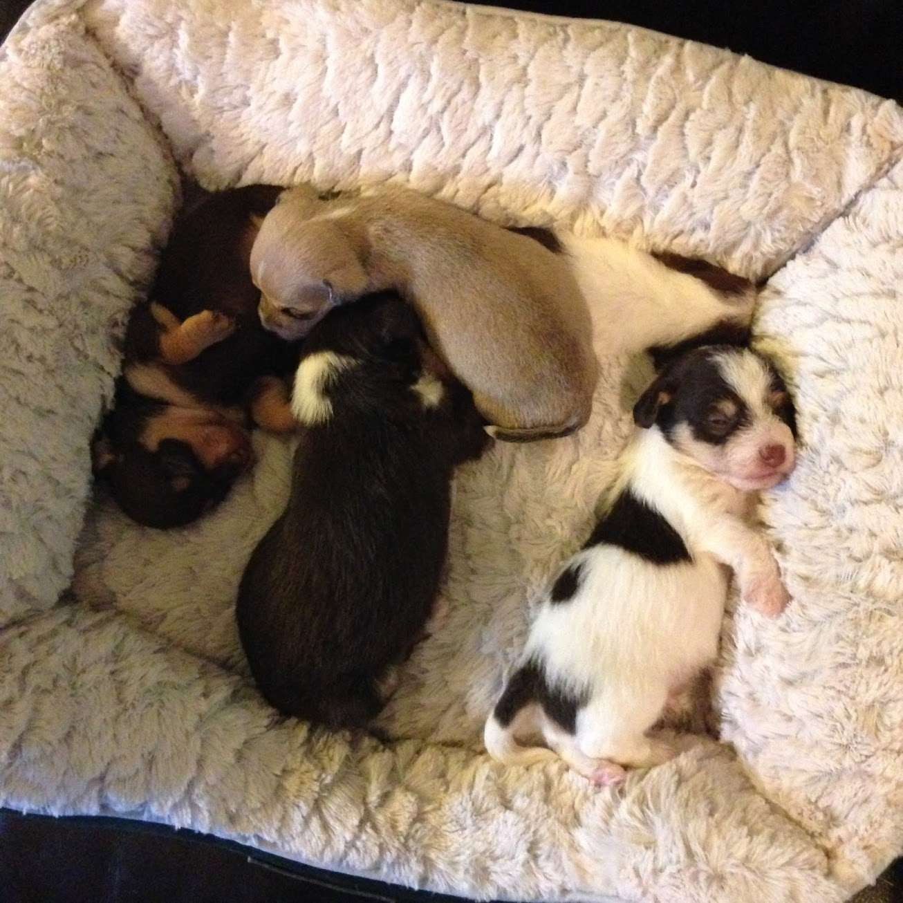
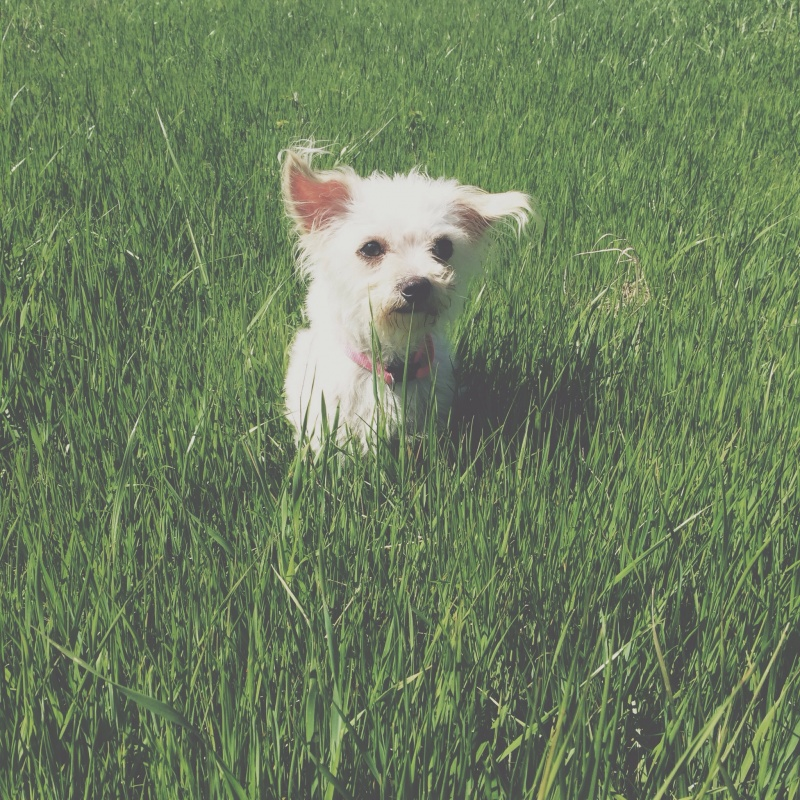
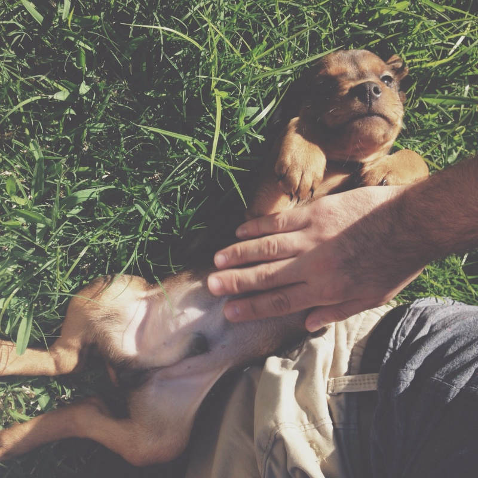
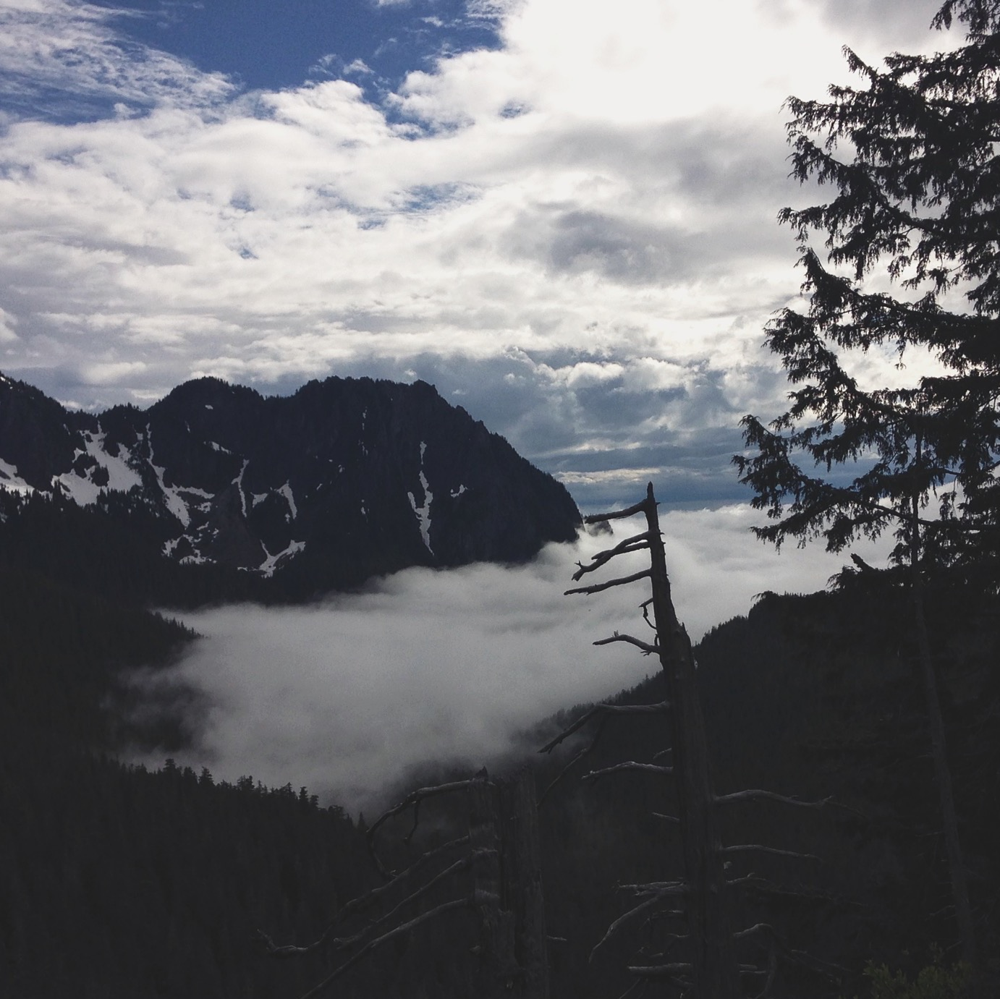
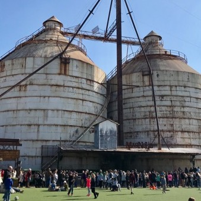

Below are some photos of times I got to eat well, foster dogs, and travel far

Personal Interests



The photos above are just a small portion of the food I have been able to enjoy during my young adult life. Not only do I spend my weekends trying out new restaurants, I also enjoy cooking and frequently try out new recipes.



Because I grew up wanting to be a veterinarian, I still feel a need to give back to animals. That is why I have spent a big portion of my free time volunteering at an animal shelter called Second Chance SPCA. A part of my volunteering consists of fostering dogs and you can see a few of the dogs I fostered in the photos above. Fostering these dogs have provided me experiences and bonds that I will never forget.



Like most others, I enjoy traveling. Though I have not had a lot of free time to travel, I still have been able to visit countries such as Turkey and Iran in my lifetime. The pictures above are from when I visited (from left to right) Seattle, California, and Waco, Texas. I would recommend visiting Seattle to anyone because it has the perfect combination of mountains and city-life all in one state.